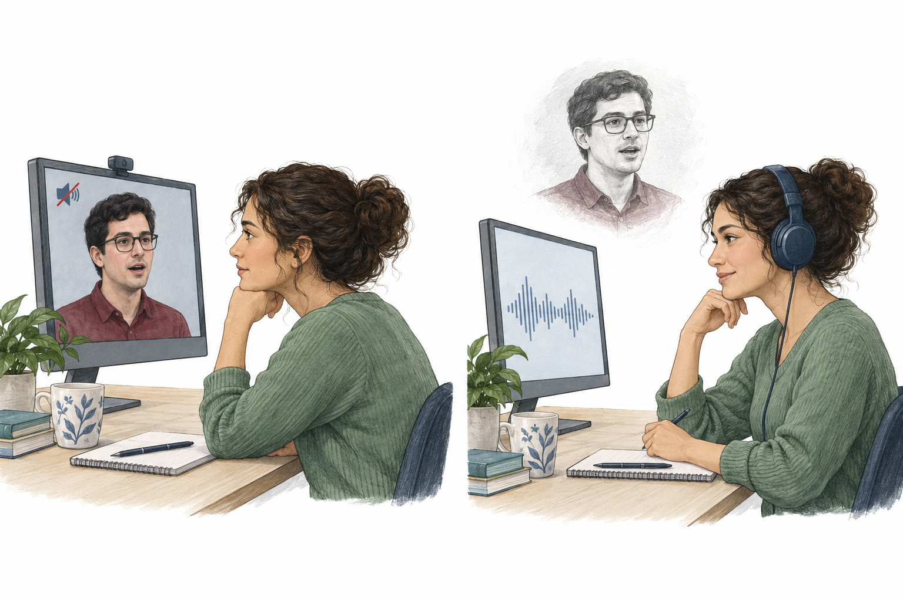
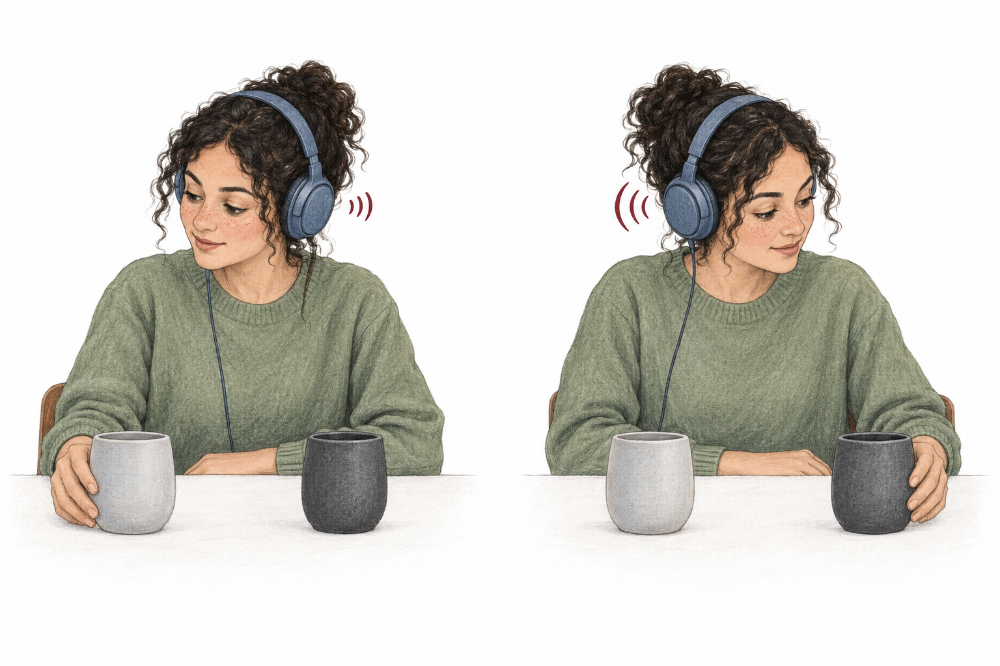
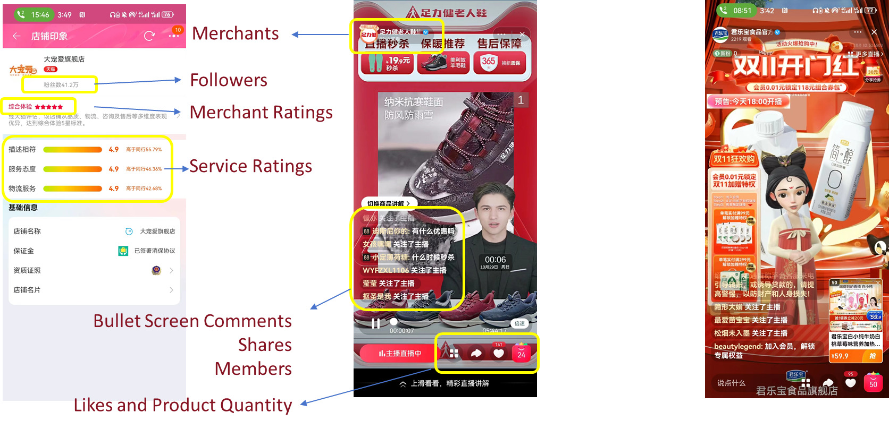
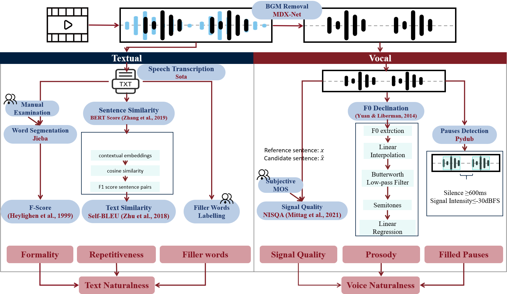
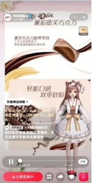

How We Arrived at Our Research Questions
1.1 Our Research Questions
- RQ1How do text and voice naturalness influence user engagement with virtual streamers in livestreaming eCommerce?
- RQ2How does anthropomorphic appearance moderate the effects of text and voice naturalness on user engagement?
1.2 Why We Focus on Digital Streamers in Livestreaming eCommerce
- Livestreaming eCommerce is rapidly expanding. China’s market grew from ¥0.42 trillion in 2019 to ¥4.92 trillion in 2023, reaching 35.2% year-on-year growth.
- Virtual streamers are emerging within this expanding market. Merchants increasingly use AI-driven presenters to extend operating hours, reduce costs, and support brand-operated livestreams.
Source: recreated from iResearch (2024), 2023 China Livestreaming eCommerce Industry Research Report.
Gap 1:Commercial adoption has advanced rapidly, but evidence explaining how virtual streamers shape consumer engagement remains limited.
1.3 What’s the Difference Between Digital Streamers and Human Streamers?
- Naturalness Is the Key Difference. Unlike human streamers, digital streamers rely on generated scripts, synthesized voices, and animated appearances to simulate human communication and appearance. A key distinction lies in how naturally they speak and how human-like they look. This raises the question: Does greater naturalness lead to higher user engagement?
Gap 2:Prior research on digital streamers has largely followed the approach used to study human streamers, focusing on appearance, attractiveness, and functional features. However, no studies have examined how language naturalness, a distinctive characteristic of digital streamers, affects user engagement.
1.4 Why We Study Language Naturalness as an Independent Variable
- Language supports purchase decisions. Streamers need to clearly explain what products offer, how much they cost, and when and how to use them to help users make purchase decisions. Language is therefore the most important modality in livestreaming eCommerce.
- Language naturalness has textual and vocal dimensions. Drawing on linguistic theory, language comprises two components: text ("what is said") and voice ("how it is said"). We therefore distinguish between text naturalness and voice naturalness and examine their respective effects on user engagement.
Gap 3:Prior research has examined language use among human streamers, but the effects of language naturalness on user engagement with digital streamers remain unexplored.
1.5 Why We Consider Anthropomorphic Appearance as a Moderator
- Perception Is Cross-Modal. Input from one sensory modality can influence perception in another. Anthropomorphic appearance may therefore shape how users perceive and process language naturalness, moderating its effects on user engagement.
Gap 4:Prior research has not examined how anthropomorphic appearance moderates the effects of language naturalness on user engagement from a cross-modal perspective.
Theoretical Foundation and Hypotheses
2.1 Theory 1: Information Foraging Theory
Drawing on optimal foraging theory, information foraging theory explains how people seek, gather, and consume information by analogy with animals foraging for food: they adapt their strategies to obtain valuable information relative to the costs incurred (Pirolli & Card, 1999).
-
Information Scent
Information scent refers to how users use immediately available cues to assess the value and relevance of information before accessing it (Pirolli & Card, 1999).
In our study, streamers' language provides the primary cues because it conveys core product information, such as attributes, prices, and usage scenarios. Anthropomorphic appearance provides supplementary cues because it can shape how users perceive and process that language.
-
Information Gain Rate
Information gain rate is the amount of valuable information obtained per unit cost. Users seek to maximize this rate by balancing information gains against the time and effort required to find and process information.
Information Gain Rate= Perceived Information ValueAcquisition CostIn livestreaming eCommerce, users seek to understand useful product information with less time and effort to decide whether to buy.
Hypothesis development
Hypothesis 1Increased text naturalness in virtual streamers negatively affects user engagement.
Colloquial ExpressionsColloquial expressions are informal words and phrases commonly used in everyday conversation.
- Colloquial expressions
- Streamers appear less professional
- Reduced persuasiveness and credibility
- ↓ Perceived Information Value
- ↓ Information Gain Rate
Diversified ExpressionsDiversified expressions use varied vocabulary and topics with less repetition.
- Diversified expressions
- Greater information complexity
- More effort to comprehend and process information
- ↑ Acquisition Cost
- ↓ Information Gain Rate
Greater text naturalness may make streamers appear less professional, weaken the credibility of product information, and require more effort to understand it, lowering users' information gain rate and discouraging engagement.
Hypothesis development
Hypothesis 2Increased voice naturalness in virtual streamers positively affects user engagement.
ProsodyProsody includes intonation, stress, rhythm, and tone of voice that make speech sound natural and expressive.
- Natural and rhythmical voice
- Greater coherence and expressiveness
- Prolonged user interest
- ↑ Perceived Information Value
- ↑ Information Gain Rate
Signal QualitySignal quality refers to the clarity and stability of the voice signal.
- High-quality voice signals
- Clearer and more stable speech
- Less confusion and easier comprehension
- ↓ Acquisition Cost
- ↑ Information Gain Rate
Greater voice naturalness may make speech more expressive and easier to understand, sustaining users' interest and reducing processing effort, thereby increasing their information gain rate and encouraging engagement.
2.2 Theory 2: Cross-modal Correspondence Effect
Human sensory systems interact and influence one another, so input from one sensory modality can shape perception in another (Calvert et al., 2004).
For example: Seeing a talker can help us understand their speech (Rosenblum et al., 2007)

Sound can guide what we look at (Hagtvedt & Brasel, 2016)

In our study, the degree of anthropomorphic appearance of virtual streamers may influence how users perceive and process language naturalness.
Hypothesis development
Hypothesis 3A higher degree of anthropomorphic appearance mitigates the negative effect of text naturalness on user engagement.
Anthropomorphic AppearanceAnthropomorphic appearance refers to how closely a virtual streamer resembles a human.
- Higher anthropomorphism
- Streamers appear capable and trustworthy
- Users feel confident about the transaction and decide faster
- ↑ Information Gain Rate
- Weaker negative effect of text naturalness
A higher degree of anthropomorphic appearance may make virtual streamers appear more capable and trustworthy, helping users feel more confident about the transaction and decide faster, thereby increasing their information gain rate and mitigating the negative effect of text naturalness on user engagement.
Hypothesis development
Hypothesis 4A higher degree of anthropomorphic appearance amplifies the positive effect of voice naturalness on user engagement.
- Higher anthropomorphism
- Clearer facial expressions convey emotions and intentions
- Users grasp the streamer's meaning faster
- ↑ Information Gain Rate
- Amplifies positive effect of voice naturalness
A higher degree of anthropomorphic appearance may enable clearer facial expressions that convey emotions and intentions, helping users grasp the streamer's meaning faster, thereby increasing their information gain rate and amplifying the positive effect of voice naturalness on user engagement.
2.3 Research Model
Data Collection and Variable Measurement
3.1 Data Collection
- We collected 394 livestreaming events from Taobao Live between October 26 and November 1, 2023, totaling approximately 3,709 hours.

3.2 Variable Measurement
3.2.1 Independent Variables

Text Naturalness
Colloquial Expressions
- Formality (F-Score). Calculated from part-of-speech frequencies using Jieba, with manual checks; lower scores indicate less formal language.
- Filler words. Calculated their frequency in each transcript using a list compiled and reviewed with two linguistic scholars.
Diversified Expressions
- Repetitiveness (Self-BLEU). Averaged BERTScore similarities between each sentence and the remaining sentences; lower scores indicate less repetition.
Voice Naturalness
Prosody
- Prosody (F0 declination). Extracted pitch contours with Praat, interpolated and smoothed them, then fitted regression slopes to semitone values.
- Pause frequency. Used Pydub to detect silence lasting more than 600 ms at an intensity below -30 dBFS.
Signal Quality
- Signal quality (NISQA). Estimated speech quality as a Mean Opinion Score (MOS), validated against manual ratings.
We used Principal Component Analysis (PCA) to aggregate the respective indicators into separate measures of text naturalness and voice naturalness.
3.2.2 Dependent Variable
User Engagement (per livestream) = Likes Shares New Followers New Members Bullet Screen Comments
3.2.3 Moderating Variable Anthropomorphic Appearance

3.2.4 Control Variables
| Livestream Level | Weekend, Duration, Subtitles, Background music |
|---|---|
| Merchant Level | Followers, Product quantity, Merchant rating |
Model Specification and Results
4.1 Model Specification
Why we use a negative binomial regression model with robust standard errors:
- Non-negative counts: User engagement is a non-negative count variable.
- Variance exceeds mean: Reported variance = 926.071 > 334.056 (mean).
- Pearson dispersion: The reported statistic is 1,760.983 > 1, further indicating overdispersion.
4.2 Main Results
Regression results provide empirical support for all four hypotheses (H1–H4).
| Variable | M1 | M2 | M3 |
|---|---|---|---|
| Followers | 0.142* | 0.136* | 0.148** |
| Merchant rating | −0.363 | −0.182 | −0.296 |
| Service rating | 0.357 | 0.066 | −0.216 |
| Duration | −0.014 | −0.032 | −0.015 |
| Product quantity | 0.253** | 0.147 | 0.187** |
| Weekend | 0.446* | 0.171 | −0.362 |
| Subtitles | −0.895*** | −0.622* | −0.150 |
| BGM | 0.307 | 0.204 | 0.010 |
| Text naturalness | −1.568** | −2.483*** | |
| Voice naturalness | 0.802* | −1.165** | |
| Appearance | 0.307 | ||
| Appearance × Text naturalness | 2.122* | ||
| Appearance × Voice naturalness | 2.191*** | ||
| Constant | 4.516* | 4.561** | 4.768** |
N = 394*** p < 0.01** p < 0.05* p < 0.10 | |||
4.3 Heterogeneity Analysis
We examine price level, brand type, streamer gender, and product type because they reflect differences in purchase risk, brand familiarity, perceptions of the streamer, and ease of product evaluation. These differences may shape users' reliance on streamer language and thus the effects of language naturalness on engagement.
| Variable | Price Level | Brand Type | Streamer Gender | Product Type | ||||||||||||
|---|---|---|---|---|---|---|---|---|---|---|---|---|---|---|---|---|
| Low price | High price | Niche brand | Famous brand | Female voice | Male voice | Search products | Experience products | |||||||||
| Main effects | With interactions | Main effects | With interactions | Main effects | With interactions | Main effects | With interactions | Main effects | With interactions | Main effects | With interactions | Main effects | With interactions | Main effects | With interactions | |
| Text naturalness | −1.182 | −3.380** | −1.615** | −2.040*** | −2.303** | −3.477** | −0.593 | −1.174 | −1.204* | −1.844** | −1.733 | −4.722*** | −0.017 | −3.584** | −1.945** | −2.661** |
| Voice naturalness | −0.047 | −1.662* | 1.434** | −0.725 | 2.013*** | −2.225** | −0.860 | 0.032 | 1.096* | −0.595 | 0.267 | −4.089*** | 0.053 | −2.977** | 1.247* | −1.049 |
| Appearance | 0.105 | −0.135 | −1.340 | 1.514** | 0.544 | −1.508 | −0.004 | −0.183 | ||||||||
| Text naturalness × Appearance | 3.609* | 2.346* | 3.594* | 1.345 | 2.095* | 4.845** | 3.847* | 2.670* | ||||||||
| Voice naturalness × Appearance | 1.807* | 2.643*** | 4.268*** | −0.848 | 2.059** | 4.849*** | 2.389 | 2.785*** | ||||||||
| Controls | Included | Included | Included | Included | Included | Included | Included | Included | Included | Included | Included | Included | Included | Included | Included | Included |
| Constant | 6.941** | 6.471** | −3.737* | −6.386*** | 6.677*** | 6.693** | −5.510* | −2.421 | 5.368** | 5.595** | −5.200* | −5.675** | 5.065* | 6.266* | 4.568* | 4.884* |
| Observations | 184 | 184 | 210 | 210 | 196 | 196 | 198 | 198 | 332 | 332 | 62 | 62 | 106 | 106 | 288 | 288 |
*** p < 0.01** p < 0.05* p < 0.10 | ||||||||||||||||
4.3.1 Possible Explanations
One possible explanation is that user engagement may rely less on streamer language in contexts involving low-priced products, famous brands, male streamers, and search products, making the relationship between language naturalness and user engagement less statistically evident.
Price Level
- Low-price products
- Low involvement and low perceived risk
- Less detailed evaluation of the streamer's information
- Less reliance on streamer language
Brand Type
- Niche brands
- Limited market recognition and greater information asymmetry
- Greater need for clear communication of product value
- Greater reliance on streamer language
Streamer Gender
- Gender match with the audience
- Greater emotional resonance and trust
- More persuasive communication
- Greater user engagement
Product Type
- Search products
- Product quality and value can be assessed before purchase
- Less need for the streamer's explanations
- Less reliance on streamer language
4.4 Robustness Checks
| Variable | M1 | M2 | M3 | M4 | M5 | M6 | M7 | M8 | M9 | M10 |
|---|---|---|---|---|---|---|---|---|---|---|
| Text naturalness | −1.837*** | −3.217** | −1.008** | −1.309*** | −1.573** | −2.488*** | −1.554** | −2.486*** | −1.906*** | −4.295*** |
| Voice naturalness | 1.126** | −1.007 | 1.909*** | 2.589*** | 0.818* | −1.150* | 0.785* | −1.164** | 1.409*** | −1.594*** |
| Appearance | −0.141 | 0.707 | 0.276 | 0.307 | −0.729 | |||||
| Appearance × Text naturalness | 2.608* | 2.133* | 2.141* | 2.140* | 3.294** | |||||
| Appearance × Voice naturalness | 2.249*** | 1.214** | 2.192*** | 2.165*** | 2.886*** | |||||
| Controls | Included | Included | Included | Included | Included | Included | Included | Included | Included | Included |
| Constant | 1.468 | 2.005 | 2.709 | 2.506 | 4.572** | 4.811** | 4.561** | 4.756** | 0.149 | 2.001 |
| N | 394 | 394 | 394 | 394 | 394 | 394 | 394 | 394 | 197 | 197 |
*** p < 0.01** p < 0.05* p < 0.10 | ||||||||||
- Model change (M1–M2). Replaced negative binomial regression with Poisson regression.
- Alternative text measure (M3–M4). Used BLEU instead of BERTScore to measure repetitiveness.
- Alternative voice measure (M5–M6). Recomputed F0 declination.
- Outlier treatment (M7–M8). Winsorized user engagement at the bottom and top 0.5%.
- Subsample test (M9–M10). Re-estimated the models using a 50% subsample.